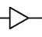

Logic Gates
Logic gates are the building blocks of computers. They are the atoms of our periodic table of elements. All of the complexity and intelligence of computers stem from these basic components.
| Icon | Gate | Effect |
|---|---|---|
| NOT | Outputs the opposite value of the input | |
| AND | Outputs 1 if both inputs are 1, otherwise, outputs 0 | |
| OR | Outputs 1 if at least one of its inputs is 1, otherwise, outputs 0 | |
| XOR | Outputs 1 if exactly one of its inputs are 1, otherwise, outputs 0 |
If you can replicate these four gates with any system of inputs and outputs, you can use them to build an entire computer. Each gate's output must always reflect the values of its inputs, and those outputs may be used as the inputs of other gates. It doesn't necessarily have to use electrical signals.
For example, Minecraft has become a powerful simulator for brilliant computer scientists and engineers because of its ability to replicate each of the logic gates in game, using redstone. People have built general purpose computers on an incredible scale, allowing you to literally see every last building block of a computer. Some of them can even execute programs written in human languages. Someone even built a fully functional Atari in minecraft, without mods.
There are also names and symbols for the opposites of each of the above logic gates:
| Icon | Gate | Effect |
|---|---|---|
|  | Buffer | Outputs the same value as the input |
| NAND | Outputs 0 if both inputs are 1, otherwise, outputs 1 | |
| NOR | Outputs 0 if at least one of its inputs is 1, otherwise, outputs 1 | |
| XNOR | Outputs 0 if exactly one of its inputs are 1, otherwise, outputs 1 |
These gates are logically identical to sticking a NOT gate at the end of each of the primary 4 gates (as indicated by the circle at the end of the icons). NAND and NOR are special. From either of those, you can actually construct all of the other logic gates. In fact, there is a free online course in which you build an entire computer from nothing but NAND gates. It's called Nand to Tetris, and I highly recommend it.
Truth Tables
You can think of computers and logic gates as input/output devices. To learn how to combine the basic components to build complex ones, we'll need to use Truth Tables.
| NOT(A) | |
|---|---|
| A | Out |
| 0 | 1 |
| 1 | 0 |
| A AND B | ||
|---|---|---|
| A | B | Out |
| 0 | 0 | 0 |
| 0 | 1 | 0 |
| 1 | 0 | 0 |
| 1 | 1 | 1 |
| A OR B | ||
|---|---|---|
| A | B | Out |
| 0 | 0 | 0 |
| 0 | 1 | 1 |
| 1 | 0 | 1 |
| 1 | 1 | 1 |
| A XOR B | ||
|---|---|---|
| A | B | Out |
| 0 | 0 | 0 |
| 0 | 1 | 1 |
| 1 | 0 | 1 |
| 1 | 1 | 0 |
Truth Tables are comprehensive lists of outputs for every possible input. "A OR B" for example has two inputs: A and B, and one output: Out. With logic gate notation, NOT, AND, OR, and XOR are like arithmetic operations. To evaluate the output, evaluate anything inside of parentheses first. Without parentheses, logic gates are evaluated in the order: NOT > AND > OR/XOR.
NOT(0 OR (1 AND 1))
NOT(0 OR (1 AND 1)) // (1 AND 1) --> 1
NOT(0 OR 1) // (0 OR 1) --> 1
NOT(1) // NOT(1) --> 0
0
Example 2: 1 AND NOT 1 OR 1 AND NOT 0
1 AND NOT 1 OR 1 AND NOT 0 // evaluate NOTs
1 AND 0 OR 1 AND 1 // evaluate ANDs
0 OR 1 // evaluate OR
1
We can write expressions with more logic gates, and obtain new Truth Tables. To construct a truth table for a given logic gate expression, go through every combination of inputs, and evaluate the output for each.
| A OR NOT(A) | |
|---|---|
| A | Out |
| 0 | 1 |
| 1 | 1 |
| A AND NOT(B) | ||
|---|---|---|
| A | B | Out |
| 0 | 0 | 0 |
| 0 | 1 | 0 |
| 1 | 0 | 1 |
| 1 | 1 | 0 |
| NOT(A) AND NOT(B) | ||
|---|---|---|
| A | B | Out |
| 0 | 0 | 1 |
| 0 | 1 | 0 |
| 1 | 0 | 0 |
| 1 | 1 | 0 |
| A OR B OR C | |||
|---|---|---|---|
| A | B | C | Out |
| 0 | 0 | 0 | 0 |
| 0 | 0 | 1 | 1 |
| 0 | 1 | 0 | 1 |
| 0 | 1 | 1 | 1 |
| 1 | 0 | 0 | 1 |
| 1 | 0 | 1 | 1 |
| 1 | 1 | 0 | 1 |
| 1 | 1 | 1 | 1 |
Boolean Expressions
Truth Tables allow us to compare any two logic gate expressions (aka Boolean Expressions). If two expressions result in the same truth table, then the expressions are equivalent. You can exchange one for the other without impacting the output. That may however affect the efficiency. Each logic gate takes some small amount of time to produce a stable output, and uses some energy, so fewer gates = faster calculation and less heat.
Evaluating boolean expressions might seem a bit contrived... until you realize that there is a way to convert any truth table into a boolean expression. It turns out that there is an easy, systematic way to generate any table of outputs you desire, given unlimited logic gates to work with. Here's how:
- For each 1 in the
Outcolumn, write an expression that requires the exact inputs of that row - Connect all of those expressions together with OR
- Simplify

OR all of the expressions together:
NOT(A) AND B AND NOT(C) OR NOT(A) AND B AND C OR A AND NOT(B) AND C OR A AND B AND C
Simplify:
(NOT(A) AND B) OR (A AND NOT(B) AND C) OR (A AND B AND C)
(NOT(A) AND B) OR (A AND C)
If you create a truth table using that final expression, you should get the same truth table as the original.
The simplification step can be tricky. In fact, there is no known algorithm that can do that perfectly and efficiently. Generally, simplification is done by applying common simplification patterns. In this case, I used the fact that (X AND Y) OR (X AND NOT(Y)) always equals X.
There are several common and useful tricks for simplifying boolean expressions. Some may seem obvious, others not so much.
| Idempotence | x OR x = x |
x AND x = x | |
| Tautology | x OR NOT(x) = 1 |
| Contradiction | x AND NOT(x) = 0 |
| Commutative Laws | x AND y = y AND x |
x OR y = y OR x | |
| Associative Laws | x AND (y AND z) = (x AND y) AND z |
x OR (y OR z) = (x OR y) OR z | |
| Distributive Laws | x AND (y OR z) = (x AND y) OR (x AND z) |
x OR (y AND z) = (x OR y) AND (x OR z) | |
| DeMorgan's Laws | NOT(x AND y) = NOT(x) OR NOT(y) |
NOT(x OR y) = NOT(x) AND NOT(y) |
I wouldn't bother memorizing these laws. It's far more effective to try to reason why the stuff on the left of each equals sign implies the stuff on the right.
For example, take DeMorgan's second law: NOT(x OR y) = NOT(x) AND NOT(y). The trick to this one is to ask the right question: When is x OR y 0? Answer: when both x and y are 0. Rephrasing, x OR y is 0 when x is 0 and y is 0, or in other words, NOT(x OR y) is 1 when NOT(x) AND NOT(y) is 1. I'd recommend also trying to reason through DeMorgan's first law, and the Distributive Laws for practice.
Real World Implementation
Designing an actual computer requires you to create combinations of logic gates to produce specific truth tables. A combination of logic gates that serves a particular purpose is called a chip. (For programmers, it's like a function.) The design process has you begin with the basic gates, using them to build basic chips. These chips then get combined into higher level chips. The chips are like mathematical operations. You build upon the operations you've already created to create more features and operations you can use. Eventually, you're left with one super-chip, called a CPU, which has the power to execute machine code instructions (which are just 1s and 0s), and modify memory. Often times, it may be clear what you want each chip to do, but it's up to you to figure out how to actually compose that behavior from logic gates. This entire process is done using Hardware Description Language, or HDL.
There are a few ubiquitous chips that should be mentioned: The Multiplexer, the Demultiplexer, and the 1-bit register.
The Multiplexer takes three Inputs: A, B, and Sel. If Sel is 0, then it outputs A. If Sel is 1, then it outputs B. You can combine a few multiplexers to create versions that can select from one of many different inputs based on a multi-bit Sel input. The Demultiplexer is the reverse. It has multiple outputs, and sends the input to one of those outputs based on Sel. Together, these are used to manage memory, and make decisions for the computer.
The 1-bit register is a clever logic circuit that can store a signal. It is the smallest unit of memory. To understand it, first consider this logic circuit: Two NOT gates feeding into each other. We'll call them N1 and N2.

Suppose N1's input is off. Its output will be on, which is also N2's input, so N2's output is off. That is a stable configuration, with the power sitting on one side of the circuit (in front of N1). Now, suppose you momentarily supplied power to N1's input. Its output turns off, which turns on N2's output. Again it's a stable configuration, but the power is sitting behind N1. This circuit is the key to memory.
The 1-bit register is essentially that basic circuit, wrapped in several logic gates that allow you to load an input value into the circuit conditionally. The ability to store data dramatically increases the possibilities of logic circuits. With just this knowledge, someone could write a fully fledged game using nothing but logic gates (I don't recommend it).

There is one more critical element to a computer: the clock. The clock is simply an oscillator, alternating between low and high voltage at breakneck speed. Its purpose is to synchronize all of the logic gates in the computer, giving them enough time to settle on a voltage before they are read from. Only when the clock is high, can memory be modified. After that, the clock goes low while the logic gates of the system settle on their next state, and the cycle continues.